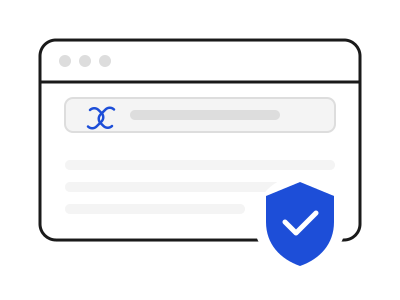

Sentry: Real-Time Link and Download Protection
Sentry is a concept for a tool that checks links and downloads the moment they reach you, so you can stop before you click on something unsafe.

Instead of warning you after something bad has already happened, Sentry checks a link or file right away and lets you know if it looks safe.
What Sentry Would Do
- Check links in real time, before you open them
- Flag downloads that look risky
- Explain warnings in plain language, not technical jargon